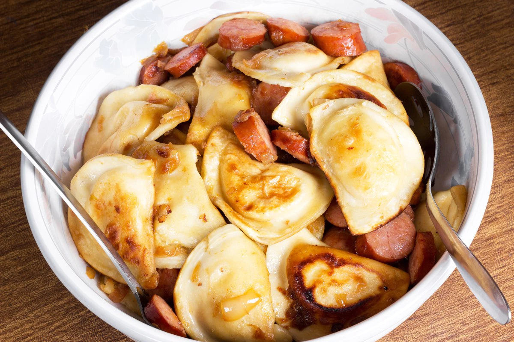

Perogies, Vegan Sausage and Onion

You ever wanted the tastiest perogies you have ever had while also saving the lives of innocent hogs everywhere? Well your in luck, because ol' Jigidy knows how to do it. The wise man mostly makes his perogies without meat and may I say they are some of the best perogies you are going to find. They're also cheap, for all you starving students out there (I can relate).
Here is how you make them!
- Olive Oil, used generously
- 1 dozen perogies (only 600 calories!)
- 2 Beyond Meat Sausages
- Paprika, Cumin and Salt
- 1 Whole Onion
- Optional: Garlic Clove or two
- First, you need to get yourself a pan, smack it onto the oven top and heat it up to a medium (Thats the 5 or "med" icons on your stovetop for all you people who only understand off and maximum).
- While the pan is heating up, chop up the onion into little cubes. They need to get a head start in order to cook all the way through and be sweet.
- Put the onions in the pan and add Paprika, Cumin and Salt. Really as long as there are not physical piles of the spices in the pan, you've done it right. Add as much or as little as you want, just don't make it an ocean alright.
- While cooking up the onions and making sure you're stirring them occasionally, cut up two Beyond Meat Sausages into thick slices, and then set them to the side while you get the perogies out. I usually make about a dozen perogies because they're one of those things you can have a dozen of and still not have eaten very many calories.
- Once you've given the onions ten minutes or so, add in the sausage and the perogies and, if you wish, add another round of paprika, cumin and salt. If you want to watch the salt intake I sometimes skip the salt because the perogies definitely have enough in them to make them taste excellent, but definitely the paprika and cumin again.
- I find that once you have it all in the pan it only properly takes seven or eight minutes max in order for the perogies to be done. The perogies will be softer and chewier. Pro Tip: If you want the perogies to be firmer on the outside, cook them in a different pan first, and then add them with everything else.
Enjoy your meal you raging lunatic!
Burn a trail all the way back to the homepage